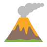
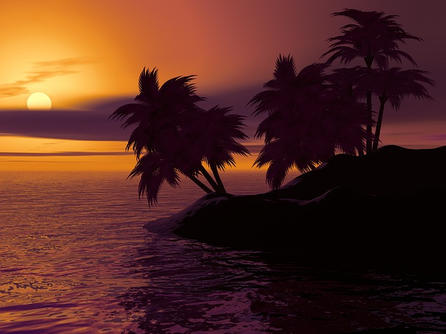
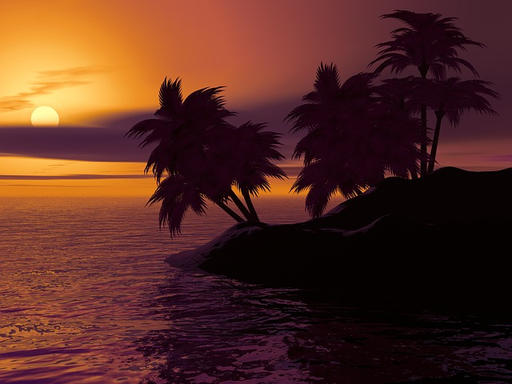
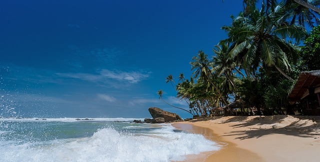
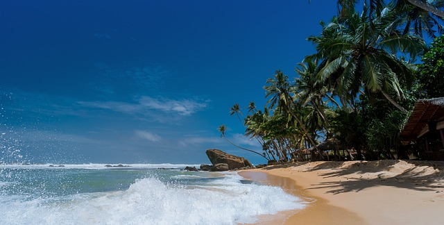
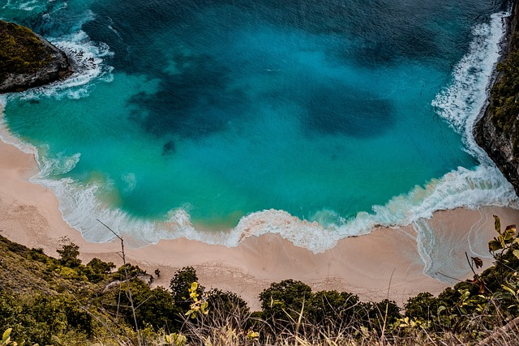
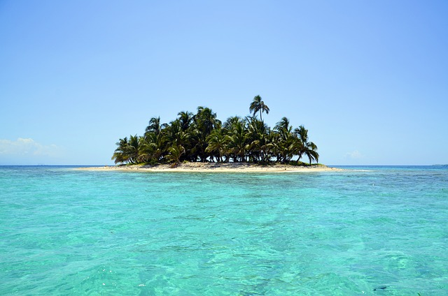
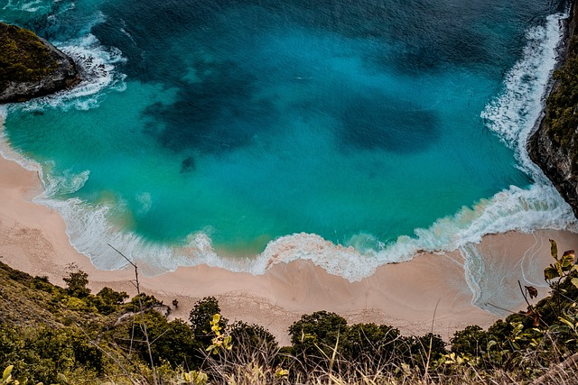
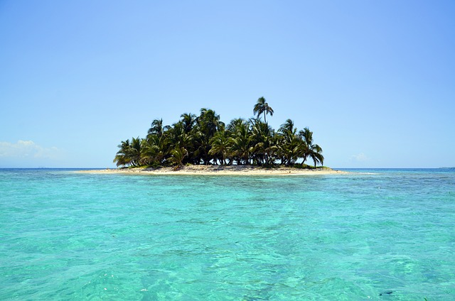

Strand

Boottochten
Surfen

Pretpark

Vulkaan
Strand
Boottochten
Surfen
Pretpark
Vulkaan
 

 

 




| Officiële taal | IJslands |
| Hoofdstad | Reykjavik |
| Regeringsvorm | Parlementaire republiek |
| Staatsvorm | Gedecentraliseerde eenheidsstaat |
| Staatshoofd | President Halla Tómasdóttir |
| Regeringsleider | leider Premier Bjarni Benediktsson |
| Inwoners | 368.792 (3,6/km²) |
| Oppervlakte | 103,000 km² |
Japan staat bekend om zijn unieke mix van traditionele cultuur, zoals geisha's en sumo, en moderne technologie.
Japan is een eilandengroep met vier grote eilanden, waaronder Honshu, Hokkaido, Kyushu en Shikoku.
Japanse gerechten zoals sushi, ramen en tempura zijn wereldwijd geliefd.
Populaire attracties zijn Mount Fuji, de tempelstad Kyoto en de neonlichten van Tokyo.
Japan is 's werelds derde grootste economie en een leider in technologie en innovatie.
Bali welcomed 6.3 million foreign visitors in 2024.
Today 18.05u
The Philippines' islands of Palawan and Boracay have been recognized among the top island destinations in Asia.
Today 17.44u
Hawaii ranks as the second most photographed island globally, with 38.4 million Instagram hashtags, highlighting its popularity.
Today 16.34u
Updated 04/01/2025 17.08u
Ibiza is the third most photographed island worldwide, known for its vibrant nightlife and serene beaches.
Today 15.33u
Santorini is the most popular Greek island on Instagram, with almost 8 million hashtags, reflecting its global appeal.
Today 14.18u
Eten
Tradities
activiteiten
sport
fauna & flora
Jungle
Bangkok
Stranden
Markten
Festivals